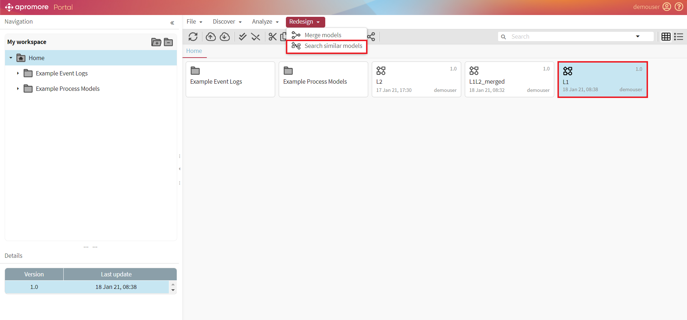
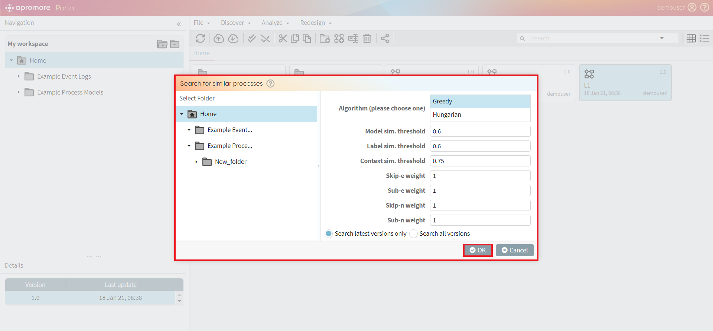
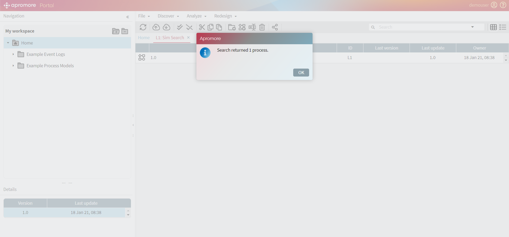

Search similar models
Apromore allows us to search similar models.
Select a BPMN model and click on Redesign -> Search similar models.

A window will pop up displaying various metrics. For example, the Label sim. threshold provides the similarity threshold of the different labels of a model. Initially, each field includes the default values. We can also choose to search the latest versions or all of the versions.

Click on OK. The results will contain similar models along with the similarity score.
